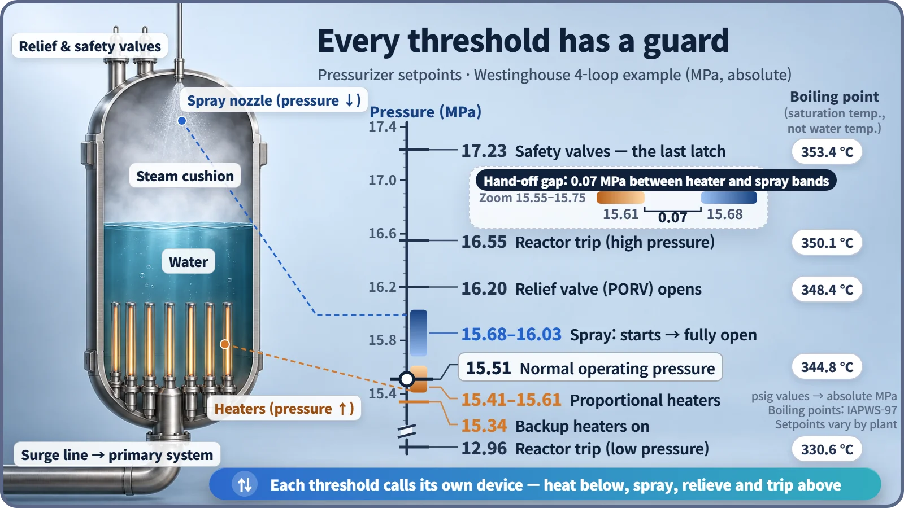
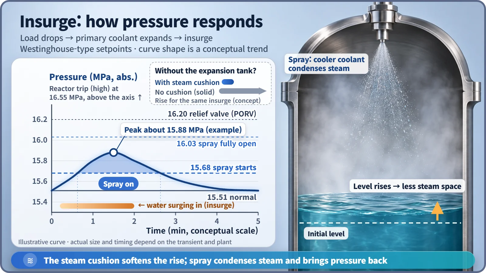

Plant Operation, Control & the Grid · 243
Squeeze So It Won't Boil, Release So It Won't Burst — Pressure Control in a Nuclear Plant
A steam cushion in a tall tank sets the pressure. Heaters push it up, spray brings it down, and every threshold on the gauge has a device on duty.
A pressurized water reactor keeps its primary system pressure in a narrow band around 15.5 MPa so the water never boils, yet never so high that the piping is threatened. A tall tank called the pressurizer does it with two hands: electric heaters that make more steam to raise pressure, and a spray that condenses steam to lower it. [1]
The expansion tank's big brother
A sealed central-heating boiler usually has a pressure gauge reading around 1 to 2 bar, and somewhere nearby a small expansion tank with an air cushion inside. Heating water expands as it warms; in a sealed loop it has nowhere to go, so the air cushion gets squeezed and takes up the extra water, and the gauge needle hardly moves.
A nuclear power plant has a big brother of that tank. It works at roughly a hundred times the boiler's pressure, and it can grow or shrink its own cushion. Its job is system pressure control.
Over 300 °C and still not boiling?
In a pressurized water reactor, the type used for most nuclear plants in South Korea, the loop of water that carries heat from the core is the primary system. System pressure control means holding the primary system's pressure within a narrow band around 15.5 MPa, about 150 times atmospheric pressure.
The boiling point of water moves with pressure: on a high mountaintop water boils below 100 °C, and squeezing harder raises the boiling point. At 15.5 MPa, water boils (its saturation temperature) at about 345 °C. In South Korea's APR1400, the hottest water leaving the core is about 324 °C, roughly 21 °C below boiling. That gap is the subcooling margin:
Subcooling margin = (boiling point at that pressure) − (coolant temperature)
If pressure falls, the margin shrinks; water at 324 °C starts to boil once pressure drops to about 11.9 MPa. The core is designed for liquid water flowing through it, so this margin must always be kept. [3] [4]
One bubble of steam sets the pressure
The pressurizer is a tall cylindrical tank connected to one point of the primary piping. The lower half or so is water, the upper part steam. Because water and steam coexist at the boiling point, the pressurizer's pressure is locked to its water temperature: about 345 °C means about 15.5 MPa.
- To raise pressure: electric heaters at the bottom boil more water, making more steam.
- To lower pressure: a nozzle at the top sprays in comparatively cooler coolant (about 291 °C). This spray condenses some of the steam.
Unlike the boiler's tank, which just leaves its air cushion alone, the pressurizer heats and cools a cushion made of its own steam, adjusting its size directly.
Every mark on the gauge has someone on duty
The two hands act according to a ladder that decides in advance who steps in at each pressure. Here are the design values of a US Westinghouse-type four-loop plant: [2]
| Pressure (MPa, absolute) | What happens |
|---|---|
| 17.23 | Safety valves open — the last latch |
| 16.55 | Automatic reactor trip (high pressure) |
| 16.20 | Relief valve opens, venting steam from the tank |
| 15.68 → 16.03 | Spray valves start to open → fully open |
| 15.51 | Normal operating pressure |
| 15.61 → 15.41 | Proportional heaters come on, stronger as pressure drops, full at 15.41 |
| 15.34 | On/off backup heaters join in |
| 12.96 | Automatic reactor trip (low pressure) |

In normal operation the proportional heaters are on at low power, making up for heat leaking through the tank wall and heat carried off by a small spray that runs all the time to keep the piping warm. When pressure rises the heaters switch off and the spray opens; the bands are separated so the two never fight. South Korea's APR1400 differs in details, such as valves that combine the relief and safety roles, but the stepped structure is the same. [1] [3]
When water surges in and drains out
Primary coolant expands by about 0.3% for every 1 °C it warms. A large plant's primary system holds about 340 m³ of water, so a 1 °C change in average temperature moves roughly 1 m³ in or out of the pressurizer.
If electricity demand drops suddenly and the turbine takes less steam, the primary coolant warms and pushes into the pressurizer, an insurge, squeezing the steam cushion and raising pressure. Soon the spray opens and brings pressure back. In an outsurge, cooling water drains out, the steam space grows and pressure falls; some of the hot water in the tank flashes to steam on its own, softening the drop while the heaters catch up.

If the pressurizer filled completely with water, the cushion would vanish and even small volume changes would make pressure swing wildly, so a steam space is always kept in normal operation. Keeping the right water level is the job of a separate control.
Three easy mix-ups
Higher pressure is not better. Too high threatens the design limits of the piping and vessel, which is why the upper part of the ladder is lined with guards. The goal is "within the set band."
The coolant pumps don't set the pressure level; the pressurizer does. The pumps push only as hard as needed to circulate the water.
Pressure doesn't cool the water. It only raises the boiling point; removing heat is the steam generator's job.
Key takeaway
The boiler gauge stays calm thanks to a small air cushion; the nuclear plant's gauge stays calm near 15.5 MPa on the same principle, plus a heating hand, a cooling hand and a protective device at every mark. Squeeze the water so it won't boil, and release the equipment so it won't burst.